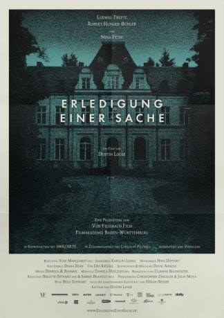

#9876 Erledigung einer Sache
Auszeichnungen: für 1 Oscars nominiert
 
 IMDB-Wertung: 6.8 / 10
IMDB-Wertung: 6.8 / 10  Metascore: 0
Metascore: 0 
Um dem letzten Willen seiner Mutter nachzukommen, muss Jakob Adler seinen leiblichen Vater aufsuchen, dem er noch nie zuvor begegnet ist. Denn sein Vater sitzt seit mehr als fünfundzwanzig Jahren in der geschlossenen Psychiatrie. Wegen des Mordes an seinem eigenen Bruder. Doch bevor es zu der schicksalhaften Begegnung kommt, möchte Jakob den behandelnden Arzt Dr. Weiss konsultieren um ihm das wahre Ausmaß der Familientragödie zu offenbaren...
Jahr: 2014
Dauer: 20 Minuten
FSK:
Land: Deutschland Studio: Capelight PicturesTonspuren:
Untertitel:
Auflösung: 1080p (1920x808) Größe: 675 MB
Genre: Drama, Kurzfilm
Regisseur: Dustin Loose
Drehbuch: Håkan Nesser, Belo Schwarz, Belo Schwarz
Soundtrack: Dürbeck & Dohmen
Darsteller:
Datei: X:\2014(A-F)\Erledigung einer Sache (2014, FSK, 1920x808).mkv seit 08.11.2018
Festplatte: HD 2013(I-Z)-2014(A-Z)
 Es gibt insgesamt 119 Filme in der Gruppe '2014(A-F)'
Es gibt insgesamt 119 Filme in der Gruppe '2014(A-F)'